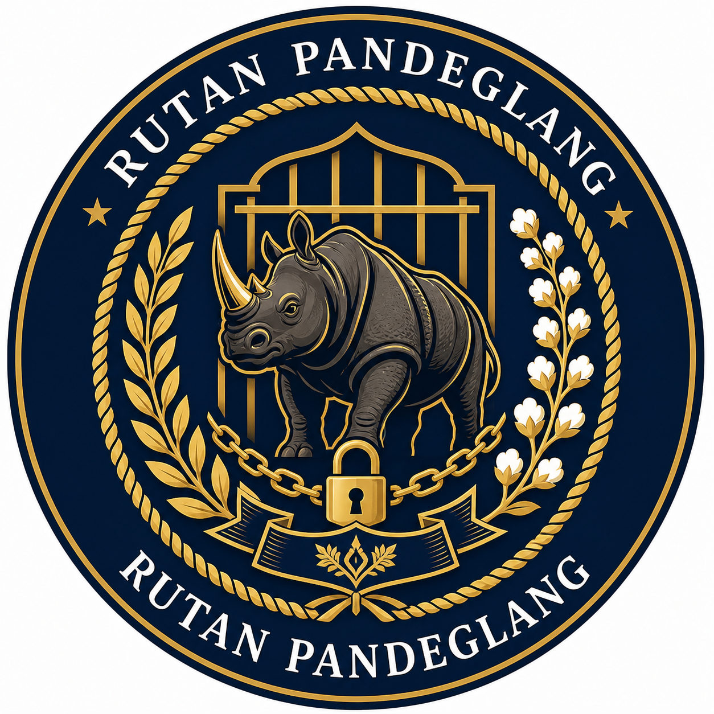

Program Pelatihan Keterampilan Dimulai
Rutan Kelas II B Pandeglang meluncurkan program pelatihan keterampilan baru untuk persiapan resosialisasi narapidana yang lebih baik dan terukur.
Baca Selengkapnya →Rutan Kelas II B Pandeglang
Platform Layanan Publik yang Transparan dan Profesional

📍 Alamat: Jl. Raya Cimanuk, Pandeglang, Banten - Indonesia
🎯 Visi: Menjadi lembaga pemasyarakatan yang profesional, transparan, dan mengutamakan hak asasi manusia
💼 Misi: Memberikan pelayanan publik terbaik dengan integritas tinggi untuk pemasyarakatan narapidana yang berkelanjutan
Layanan publik berkualitas untuk masyarakat
Layanan pengurusan dokumen dan administrasi narapidana dengan profesional dan transparan untuk kemudahan masyarakat.
Pelajari Selengkapnya →Fasilitas kunjungan keluarga narapidana dengan protokol keamanan yang ketat dan nyaman untuk kebersamaan.
Pelajari Selengkapnya →Fasilitas komunikasi narapidana dengan keluarga melalui telepon dan surat resmi yang terjangkau.
Pelajari Selengkapnya →Layanan kesehatan dan medis untuk semua narapidana di Rutan dengan standar internasional yang terpercaya.
Pelajari Selengkapnya →Program pembinaan keterampilan dan pendidikan untuk resosialisasi narapidana yang produktif dan mandiri.
Pelajari Selengkapnya →Dukungan advokasi hukum dan perlindungan hak asasi narapidana sesuai peraturan perundangan yang berlaku.
Pelajari Selengkapnya →Update dan informasi terkini dari Rutan
Rutan Kelas II B Pandeglang meluncurkan program pelatihan keterampilan baru untuk persiapan resosialisasi narapidana yang lebih baik dan terukur.
Baca Selengkapnya →Dinas Kesehatan Provinsi Banten mengadakan pemeriksaan kesehatan rutin dan pemberian vaksinasi untuk semua narapidana di Rutan.
Baca Selengkapnya →Rutan mengadakan kegiatan olahraga dan gotong royong bersama narapidana dalam rangka perayaan Hari Buruh Nasional tahun ini.
Baca Selengkapnya →Dokumentasi kegiatan dan fasilitas Rutan